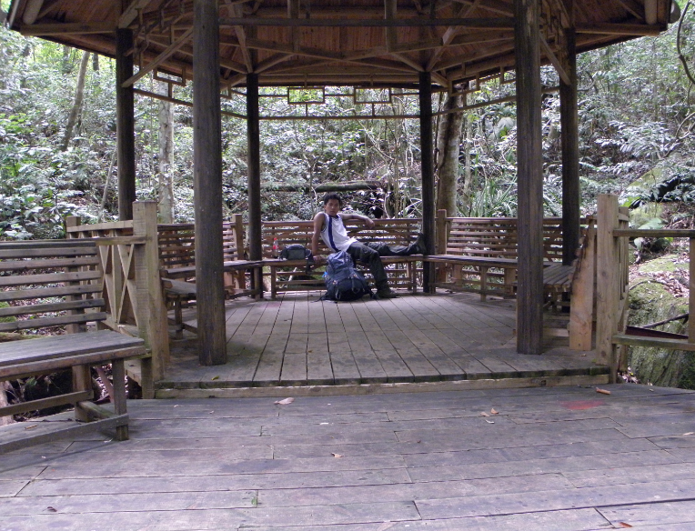

关于我
我，一个人，生活在生活中的一个人。
我，虽个儿不高，倒也谈不上出不了门的侏儒；头发卷卷的，像是一坨面团紧紧地打结在一起；高高的额头不像小时候充盈着纯洁活泼的气息，而是夹插着忧郁怨世的情结，那浅浅的皱纹弥漫着被岁月留下的香甜苦辣；两笔眉毛总是不自觉得抖动，这着实让我不时照着镜子凝注不已，似乎总觉得那里隐藏着我内心的秘密；大而黑的眼睛里闪射出来的光芒使我最为自豪，那可以说是对土地爱得深沉而流露出的无泪的光；鼻梁，扁扁的，因此没有了那在亲吻时可使出诱惑武器，唉我长叹不已；嘴唇倒是我喜欢的，毕竟这里物质性最强的，如我。
总之，我,一个人，生活在生活里却无法生活想要得到生活里的生活的一个人生活着！

这篇自我介绍来自我的写作博客网站：www.langoft.com